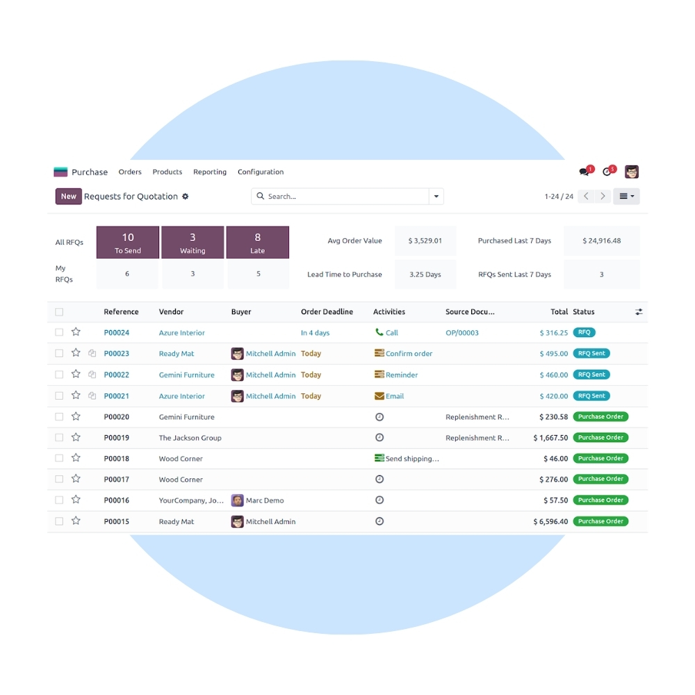
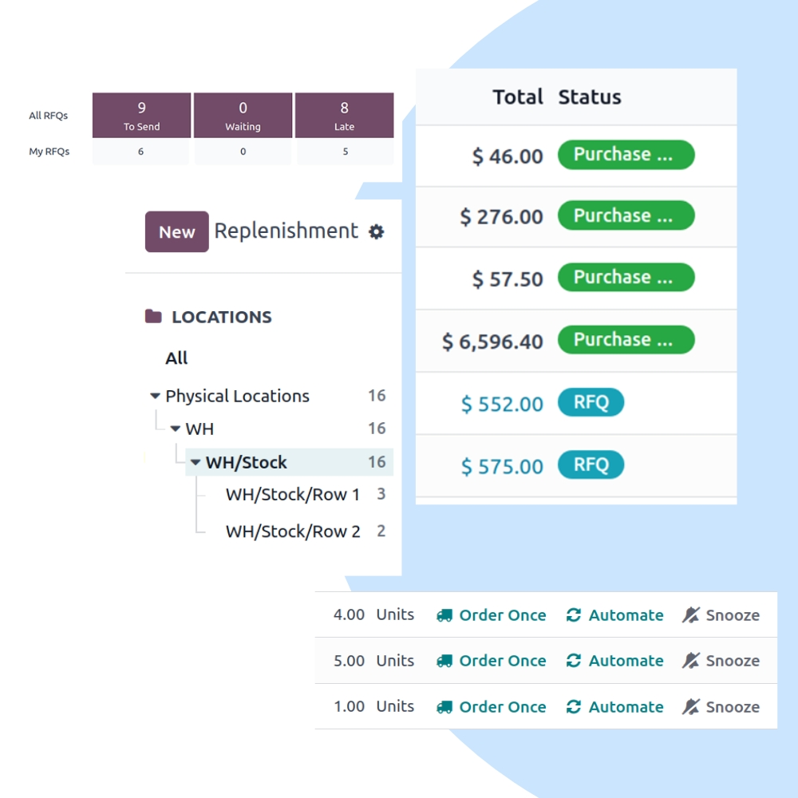
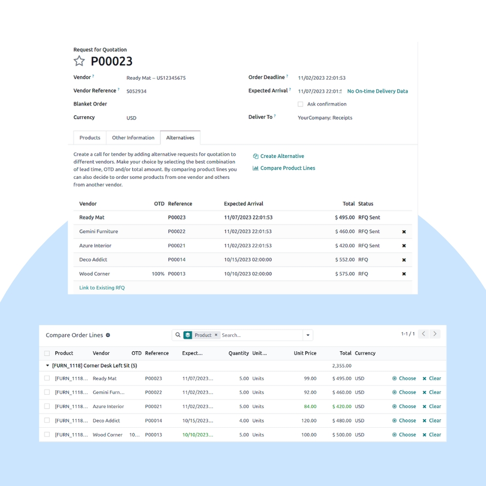

Automate and control your procurement process with Odoo Purchase. We help businesses manage RFQs, purchase orders, supplier pricing, and approvals while ensuring seamless integration with inventory and accounting.
We configure Odoo Purchase to match your procurement policies, approval hierarchies, and vendor sourcing strategy. Integrate purchasing seamlessly with Inventory, Manufacturing, Accounting, and Vendor Portals.


Our implementation ensures transparent procurement, optimized vendor selection, and accurate cost tracking from purchase request to supplier invoice.
Create and compare RFQs from multiple vendors.
Maintain supplier price lists and lead times.
Automatically generate purchase orders from stock rules.
Control purchases with role-based approvals.
Track landed costs and vendor performance.
Fully integrated with Inventory, MRP & Accounting.
We help you optimize procurement costs, improve supplier performance, and ensure compliance with purchasing policies.
